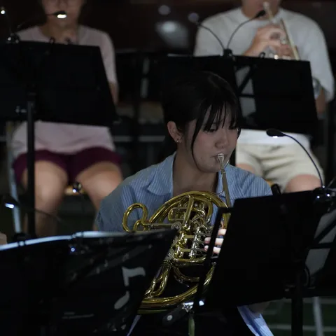

指揮與樂團核心

6401 民國 64 年入學
馮朝君
嘉義城市管樂推手．前校友團團長
嘉中管樂隊校友，退伍後返回母隊指導學弟，並長期投入嘉義地區學校管樂教育、嘉義市管樂節早期籌辦、嘉義市管樂團行政與校友團制度化。曾任嘉義高中校友管樂團團長，因數十年連結學校、校友團與城市管樂文化，曾被媒體稱為「嘉義市管樂之父」。

6951 民國 69 年入學
曾膺安
嘉義市管樂團藝術總監暨常任指揮
自 1994 年嘉義市管樂團創立即擔任藝術總監迄今逾 30 年，是嘉義市管樂界資歷最深的指揮之一。輔仁大學音樂研究所指揮組第一名入學，師承指揮家郭聯昌教授。率團巡迴全國 22 縣市，並赴香港、澳門、日本濱松、中國包頭、菲律賓馬尼拉、韓國原州演出交流。

7111 民國 71 年入學
盧宓承
嘉義高中校友管樂團團長
綽號「咪咪學長」。校友管樂團登記立案的代表人，現任教於雲林縣立蔦松藝術高中，長年擔任校友聯演的核心指揮之一。國立中正大學資訊管理博士，是跨越資訊科技與管樂教育的校友團團長。

8501 民國 85 年入學
丁肇賢
校友聯演統籌．指揮
長期協助統籌校友聯演行政與宣傳工作，並曾擔任指揮，是近年校友聯演幕後最重要的推手之一。師大指揮組出身，從嘉中低音號手走向管樂與管弦樂團指揮台。

8861 民國 88 年入學
簡晟軒
在校生管樂隊指導老師．長號演奏家
國立高雄師範大學音樂學系暨研究所畢業，赴德國萊比錫音樂院深造。現為嘉頌重奏團副團長、高雄市管樂團團員、嘉頌青年管樂團指揮，個人長號獨奏會已累積十餘場，是近年聯演的核心指揮。
職業演奏家與音樂教師

6301 民國 63 年入學
陳錫仁
小號演奏家．中臺科技大學教師
當屆社長、小號聲部。美國聖保羅大學小號演奏碩士，台灣銅管五重奏團創辦人，著有五本中文小號教材，長期任教中臺科技大學。曾在東海大學指導曾膺安；2013 年第 29 屆聯演擔任指揮與小號獨奏、2019 年第 35 屆《正八音》擔任小號協奏。

8301 民國 83 年入學
高崇文
長號演奏家．音樂班教師
阿里山鄒族校友，國立臺北藝術大學音樂碩士。1999 年台灣區音樂比賽長號獨奏成人組第一名，2004–2014 年任高雄市交響樂團長號專任團員，2008 年獲美國 Summer Trombone Workshop 獨奏比賽首獎。現任教多校音樂班，並任台灣獨奏家交響樂團、高雄市管樂團、台南市交響樂團長號演奏員。他也是簡晟軒在嘉中的長號啟蒙老師之一。

8431 民國 84 年入學
鄭鈞元
薩克斯風演奏家．南華大學講師
畢業於法國馬爾梅松音樂院（C.N.R. de Rueil-Malmaison），現任南華大學民族音樂學系講師、嘉義市管樂團薩克斯風首席，多屆聯演的重要協奏校友，2013 年第 29 屆聯演擔任指揮。

8982 民國 89 年入學
王騰寬
鋼琴合作藝術．實踐大學助理教授
嘉中音樂班、東吳大學音樂系主修鋼琴，獲美國 Lynn University 全額獎學金深造鋼琴合作藝術，明尼蘇達大學博士班主修鋼琴合作與聲樂指導，現任教於實踐大學等校，並曾任台北青年管樂團樂團經理。

9101 民國 91 年入學
謝介豪
單簧管演奏家．教師
《校友名冊》登錄為單簧管演奏家、教師。

9701 民國 97 年入學
蔡政岳
長號演奏家．低音銅管教師
當屆社長、長號聲部。國立高雄師範大學長號演奏碩士，嘉義市管樂團、NTSO 臺灣管樂團團員，也在高雄市管樂團、嘉頌銅管五重奏及「拉拉頌」長號重奏演出；長年於嘉義、雲林多所學校指導長號與低音銅管。
9841 民國 98 年入學
洪筱涵
法國號演奏家
現為國立臺灣交響樂團附設 NTSO 臺灣管樂團法國號團員。
聯演舞台上的靈魂人物

7581 民國 75 年入學
翁啟榮
低音號．校友聯演統籌
綽號「警伯」——低音號一吹四十年的警務人員。從 1990 年代返鄉帶隊，到第 33 屆召集人、第 38 屆統籌，每次團練第一個到場開門的人。

9721 民國 97 年入學
葉哲良
作曲家．編曲人
為嘉中百年校慶創作管樂曲《旭陵慶典》，以校歌為創作元素，2023 年第 38 屆聯演首演，隔年於百年校慶慶祝大會再度演出，成為貫串嘉中百年的音樂主題曲。現為嘉義市管樂團單簧管團員暨駐團編曲家。

0431 民國 104 年入學
許哲誠
旅外薩克斯風獨奏家
2025 年第 40 屆聯演協演，演出前夕甫於嘉義南門教會舉辦個人薩克斯風獨奏會，是名冊中年輕世代的代表。

0741 民國 107 年入學
陳羿弦
法國號．國立清華大學音樂系
管樂社第 89 屆學生指揮與公關，現就讀國立清華大學音樂系主修法國號，並任清大音樂系管弦樂團與管樂團副團長、嘉頌青年管樂團學生幹部、嘉義市管樂團行政助理，屢獲全國暨嘉義市學生音樂比賽法國號獨奏與重奏優等、特優——從學生指揮到城市樂團行政，年輕世代接棒的縮影。

1051 民國 110 年入學
黃鈺芠
小號．《為伍》協奏
民國 110 年入學，小號聲部，現就讀臺北市立大學音樂系。從嘉義校園管樂體系一路走進嘉中管樂社，曾參與嘉義市國際管樂節、嘉中百年校慶校友暨在校生聯演；2026 年第 41 屆《為伍》將與樂團共同演出 Philip Sparke 雙樂章小號協奏曲《Manhattan》，是年輕校友世代接棒的代表。

0271 民國 99 年入學
莊宗儒
上低音號演奏家
國立臺北藝術大學管絃與擊樂研究所畢業，EuTuba 悠風低音號重奏團、銅心銅管樂團與 TSO 管樂團上低音號團員。2022 年第 37 屆聯演《從0開始》獨奏者，2025 TEF（Taiwan Euphonium Festival）總召集人，2026 年將與銅心銅管樂團演出上低音號協奏作品。
傳奇校友

蕭萬長
前副總統
學生時期是嘉中樂隊的鼓手。2024 年嘉中百年校慶亦親臨慶祝大會。

7202 民國 72 年入學．TUBA
伍佰（吳俊霖）
創作歌手．搖滾巨星
高中時期擔任樂隊副隊長，主修低音號。畢業後多年仍回母校參與校友演奏會，甚至曾帶著自己的樂團 China Blue 為校友演奏會暖場——從學生時代的隊友到樂壇巨星仍不忘回家，是「校友永遠會回家」精神最鮮明的寫照。
這份名單並非全部——歷屆聯演背後，還有無數校友默默投入行政聯繫、譜務整理、場務執行、宣傳設計與後勤支援。正是這些橫跨世代、分散各地的嘉中管樂人共同努力，才讓這項傳統延續超過四十年。本頁內容將持續增補。